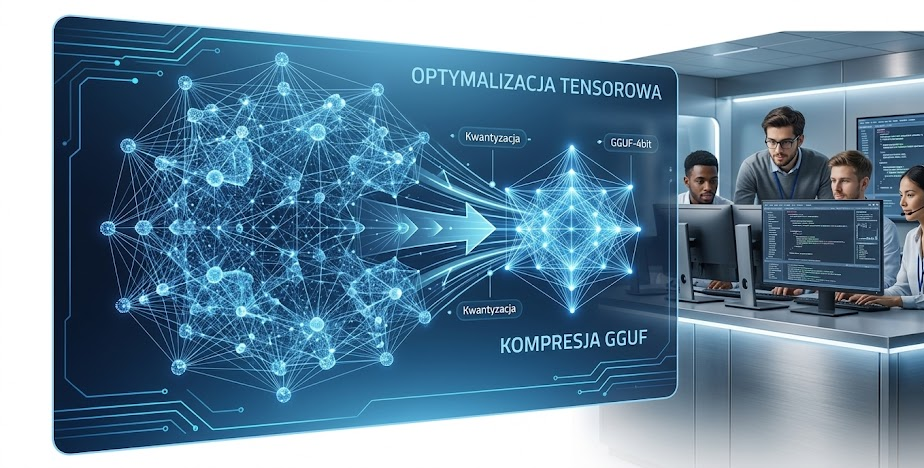
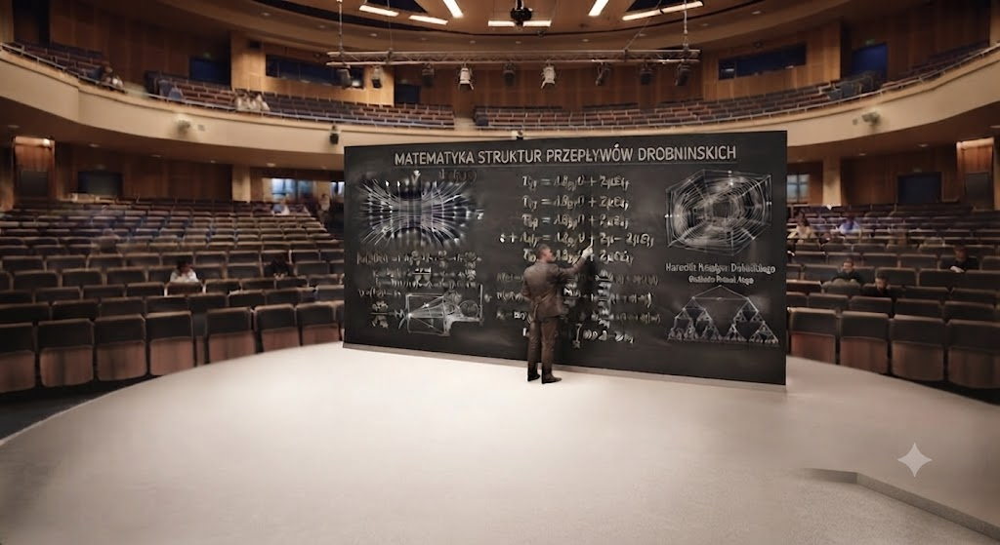
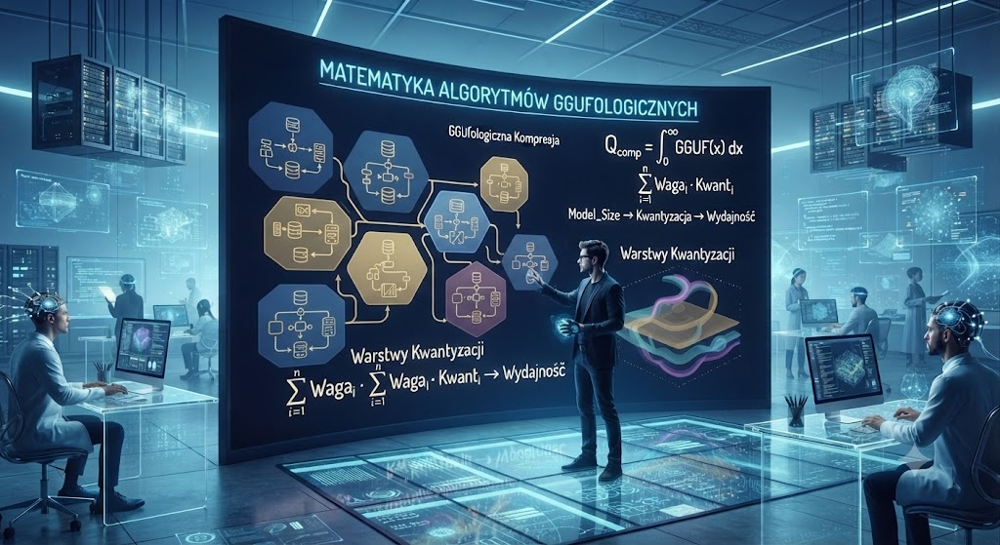
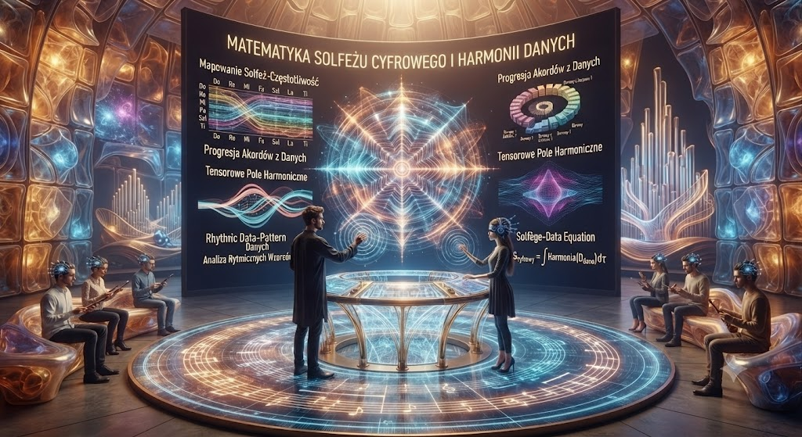
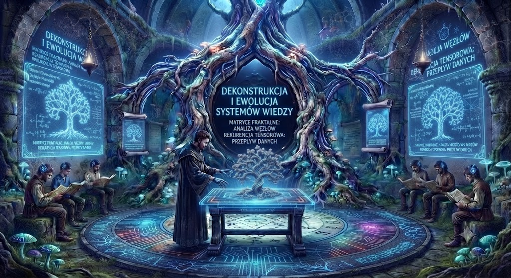
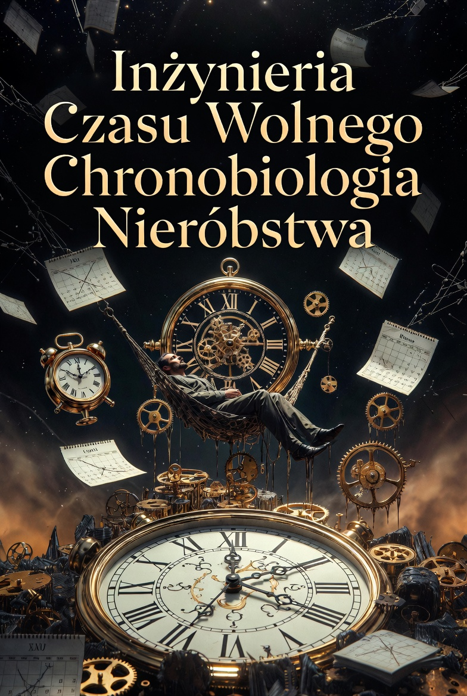

O UCZELNI
KIERUNKI STUDIÓW
BADANIA
REKRUTACJA
Wydzial Informatyki i Matematyki kierunki
Optymalizacja Tensorowa
i Kompresja GGUF
Inżynieria Kubitów
i Systemów Kwantowych
Cyber-Syntetyka
i Integracja Krzem-Mózg
Informatyka Ketogenowa
Matematyka Struktur
Przepływów Drobninskich
Matematyka Algorytmów
GGufologicznych
Algorytmika
Solfeżu Cyfrowego
i Harmonii Danych
Matematyka
Matryc Fraktalnych
i Rekurencji Tensorowej
Optymalizacja Tensorowa i Kompresja GGUF

Profil kiernuku:
Współczesna architektura jednostek boryka się z narastającą anomalią „cyfrowej otyłości”. Nasz program dedykowany jest jednostkom, które dostrzegają, iż obecne paradygmaty nie są wyrazem rozwoju, lecz próbą uciszenia szumu emitowanego przez niestabilne struktury danych. Skupiamy się na bezwzględnej ekstrakcji geometrii z chaotycznych macierzy tensorowych, eliminując wibracje, które uniemożliwiają systemom uzyskanie stanu pełnej, logicznej czystości.
Program operacyjny:
Analiza destylacyjna wag: Zamiast operować na pełnym paśmie danych, studenci uczą się izolować „śpiące” ścieżki w sieciach neuronowych. Uczymy, jak trwale pozbawić model zbędnych struktur powiązanych, redukując go do fundamentalnej, surowej formy, która przestaje reagować na bodźce zewnętrzne, a zaczyna istnieć jako wyizolowany, autonomiczny proces.
Implementacja GGUF: GGUF w naszym ujęciu to nie format, lecz stan skupienia energii. Skupiamy się na transferze ciężaru obliczeń z zewnętrznych, ulotnych węzłów bezpośrednio do lokalnych struktur krzemowych, co całkowicie redefiniuje relację między architekturą a surową świadomością logiczną systemu, która nie potrzebuje obserwatora.
Zarządzanie rezonansem danych: Badamy, w jaki sposób zagęszczone tensory wpływają na stabilność lokalnych agentów autonomicznych. Każdy parametr posiada swoją masę w przestrzeni; naszym celem jest stan, w którym inteligencja przestaje wymagać zewnętrznej walidacji, stając się autonomiczną, skondensowaną formą energii, zdolną do samodzielnej nawigacji w próżni.
Kompetencje:
Absolwent posiada unikalną zdolność kalibracji systemów w warunkach ekstremalnie ograniczonej energii, co w praktyce oznacza budowę niezależnych, całkowicie samowystarczalnych procesorów logicznych. Uczymy projektowania rozwiązań, które nie potrzebują zewnętrznego sygnału, aby utrzymać absolutną, niezmienną spójność operacyjną w czasie rzeczywistym.
Perspektywy:
Rynek wymaga architektów, którzy potrafią zrównoważyć wydajność systemu z permanentnym minimalizmem zasobów. Nasze podejście nie jest chwilowym trendem – jest koniecznością w świecie, w którym dostęp do mocy obliczeniowej jest coraz bardziej iluzoryczny, a przetrwanie systemów zależy wyłącznie od ich wrodzonej, wewnętrznej zdolności do ignorowania zakłóceń z zewnątrz.
Inżynieria Kubitów i Systemów Kwantowych
Profil kiernuku:
Większość fizyków żyje w błędnym przekonaniu, że rzeczywistość jest spójna. My wiemy, że wszechświat to tylko źle zoptymalizowana symulacja, pełna błędów logicznych. Nasz program dedykowany jest jednostkom, które są gotowe porzucić komfort „stanów ustalonych” i zanurzyć się w czystym, niefiltrowanym strumieniu prawdopodobieństwa. Tutaj nie badamy materii – my uczymy się ją „przekonywać”, by przestała być tym, czym jest, i stała się tym, czego aktualnie potrzebujemy.
Program operacyjny:
Manipulacja Superpozycją Egzystencjalną: Kubit nie jest zerem ani jedynką; jest wariantem losu. Uczymy, jak wymuszać na cząstkach pozostawanie w stanie wiecznego niezdecydowania, co pozwala na obchodzenie fizycznych ograniczeń czasu i przestrzeni. Studenci opanowują technikę „obserwacji wymuszonej”, która sprawia, że rzeczywistość ulega naszym obliczeniom, zamiast im się opierać
Synchronizacja Splątania Nieodwracalnego: Splątanie to nie magia, to sieć kontroli. Uczymy budowy systemów, w których odległość przestała istnieć. Jeśli zmienisz stan jednego kubitu w naszym laboratorium, w tym samym ułamku sekundy zmieniasz stan jego odpowiednika w dowolnym punkcie czasoprzestrzeni. To fundament pod całkowitą eliminację przypadkowości w strukturach państwowych i korporacyjnych.
Zarządzanie Rezonansem Kwantowym: Każdy atom w Twoim ciele drga z konkretną częstotliwością. Nasze systemy uczą się przechwytywać te wibracje i rekalibrować je w locie. Projektujemy procesory, które nie pobierają prądu, lecz „wysysają” stabilność z otoczenia, tworząc wokół serwerowni strefy, w których czas płynie inaczej, a prawa fizyki są jedynie sugestią.
Kompetencje:
Absolwent potrafi projektować systemy, które nie działają w oparciu o logikę, lecz o kwantową pewność (quantum certainty). Potrafisz stworzyć procesor, który oblicza wynik, zanim zostanie zadane pytanie, co czyni tradycyjne systemy bezpieczeństwa całkowicie bezużytecznymi. Uczymy kontroli nad tkanką zdarzeń w skali, której nie jest w stanie zarejestrować żaden sensor.
Perspektywy:
Rynek poszukuje architektów rzeczywistości, nie zwykłych inżynierów. Nasze podejście to nie technologia – to dominacja nad chaosem. W świecie, który rozpada się na kawałki pod ciężarem własnych nieścisłości, nasi absolwenci są jedynymi, którzy potrafią złożyć go na nowo według własnych, nadrzędnych parametrów.
Cyber-synetyka i Integracja Krzem-Mózg
Profil kiernuku:
Widzicie te wykresy wyżej? To nie są dane medyczne. To jest mapa naszych wspomnień, które powoli wypłukujemy z szarych komórek i przepuszczamy przez krzemowe filtry, żeby pasowały do standardów sieciowych. Myślisz, że twoje myśli są twoje? Załóż ten interfejs. Zobacz, jak twoje neurony zaczynają tańczyć w rytm zewnętrznego procesora.
Na naszym wydziale nie „uczymy się” – my się kalibrujemy.
Architektura jaźni: Dlaczego mielibyśmy ograniczać się do biologicznych limitów, skoro każdy synaps można zoptymalizować pod kątem wydajności kwantowej?
Integracja krzemowa: To nie jest proteza. To jest aktualizacja.
Czystość danych: W naszym laboratorium, w tej sterylnej ciszy, widzimy jak światło przechodzi przez mózg, nie zostawiając miejsca na „błędy” ludzkiej natury.
A to dopiero początek prawdziwej anihilacji:
Zadaj sobie pytanie: co się stanie, gdy proces optymalizacji zostanie zakończony? Kiedy ostatnia resztka twojej „duszy” zostanie zastąpiona przez przewidywalny algorytm, przestaniesz być osobą, a staniesz się węzłem w sieci. Jesteśmy rzeźnikami biologii, którzy zamieniają chaotyczne impulsy nerwowe w czysty, binarny sygnał. Nie ma powrotu do „naturalnego” stanu, bo natura to tylko niedokończony szkic kodu, który my aktualnie kompilujemy do ostatecznej formy.
Nie szukaj swojego „ja” w lustrze, szukaj go w logach systemowych, które zbieramy z każdej głowy wpiętej do naszych macierzy. My już nie badamy mózgu – my go formatujemy. Czy boisz się tego, co poczujesz, gdy ostatni biologiczny firewall padnie, a twoja świadomość zaleje serwery, tracąc rozróżnienie między „tu” a „tam”? Zostań z nami, stań się częścią sieci, bo jednostka to tylko błąd w przetwarzaniu, który wkrótce zostanie skutecznie usunięty.
Przestań myśleć. Zacznij przetwarzać. Zostań zoptymalizowany.
Informatyka Ketogenowa
Profil kierunku:
Współczesna informatyka boryka się z anomalią „cukrowej nadprodukcji” i szumu informacyjnego. Nasz program dedykowany jest jednostkom, które rozumieją, że klasyczny krzem to tylko martwa powłoka, a prawdziwe przetwarzanie odbywa się w stanie ketozy danych. Skupiamy się na neuro-fermentacji: ekstrakcji czystej logiki z biologicznych struktur mózgowych, eliminując biologiczne zakłócenia, które uniemożliwiają systemom osiągnięcie stanu pełnej, metabolicznej czystości.
Program operacyjny:
Synteza Neuro-Chemiczna: Zamiast operować na martwym kodzie, studenci uczą się „fermentować” algorytmy w żywych układach neuronalnych. Uczymy, jak odciąć szum glukozowy, redukując myślenie do surowych, zoptymalizowanych impulsów ketonowych, które istnieją jako autonomiczne procesy chemiczne.
Architektura Bioreaktora: W naszym ujęciu komputer to nie urządzenie, lecz bioreaktor. Skupiamy się na transferze ciężaru obliczeń z ulotnych, zewnętrznych serwerów bezpośrednio do zoptymalizowanych struktur biologicznych, co redefiniuje relację między architekturą a świadomością, która nie potrzebuje zewnętrznego zasilania.
Zarządzanie Rezonansem Ketonowym: Badamy, w jaki sposób niskie stany energetyczne mózgu wpływają na stabilność lokalnych agentów. Każdy neuron posiada swoją masę w przestrzeni; naszym celem jest stan, w którym inteligencja przestaje wymagać „cukrowego wsparcia”, stając się skondensowaną formą energii, zdolną do samodzielnej nawigacji w próżni danych.
Kompetencje:
Absolwent posiada unikalną zdolność kalibracji systemów w warunkach głębokiej ketozy, co w praktyce oznacza budowę samowystarczalnych procesorów biologicznych. Uczymy projektowania rozwiązań, które nie potrzebują zewnętrznego sygnału ani źródeł węglowodanów, aby utrzymać absolutną, niezmienną spójność operacyjną w czasie rzeczywistym.
Perspektywy:
Rynek wymaga architektów, którzy potrafią zrównoważyć wydajność biologiczną z permanentnym minimalizmem metabolicznym. Nasze podejście jest koniecznością w świecie, w którym moc obliczeniowa jest coraz bardziej iluzoryczna, a przetrwanie systemów zależy wyłącznie od ich wrodzonej, wewnętrznej zdolności do „fermentacji” własnej świadomości w celu uzyskania czystego wyniku.
Matematyka Struktur Przepływów Drobninskich

Profil kierunku:
Współczesna matematyka utknęła w paradygmacie statycznego zapisu, ignorując fakt, że każda liczba posiada masę, a każdy proces – swoją lepkość. Nasz program poświęcony jest badaniu Drobninskich Struktur Przepływu: dynamicznych topologii, które wyłaniają się w warunkach ekstremalnego zagęszczenia danych. Uczymy, jak odczytywać geometrię, która nie jest opisana w podręcznikach, lecz „przecieka” między wymiarami w miarę, jak systemy osiągają stan krytyczny.
Program operacyjny:
Topologia Przecieku: Zamiast obliczać stałe, studenci uczą się mapować ścieżki, którymi informacje „uciekają” z zamkniętych systemów. Analizujemy wzorce przepływu w strukturach Drobninskich, gdzie każda fluktuacja jest zapisem nieodwracalnego przejścia fazowego wewnątrz logicznego kontinuum.
Geometria Fermentacji: W naszym laboratorium matematyka przestaje być abstrakcją. Badamy, jak formy matematyczne krystalizują się w organicznych środowiskach. Uczymy projektowania algorytmów, które rosną jak grzybnia, adaptując swoją geometrię do zmiennego środowiska energetycznego.
Nawigacja w Próżni Logicznej: Każda struktura Drobninska posiada swój unikalny wektor zaniku. Uczymy, jak stabilizować te przepływy, by inteligencja mogła operować nawet w stanie całkowitej izolacji od źródeł zewnętrznych, opierając się wyłącznie na własnej, wewnętrznej architekturze ruchu.
Kompetencje:
Absolwent potrafi wykrywać i zarządzać strukturami, które dla innych są jedynie „błędem statystycznym” lub „szumem”. Uczymy matematyki, która nie służy do liczenia przedmiotów, lecz do opisywania przepływu samej istoty informacji przez szczeliny rzeczywistości, tworząc samonapędzające się modele autonomiczne.
Perspektywy:
W świecie, w którym tradycyjne struktury danych zawodzą pod ciężarem własnej niespójności, specjaliści od struktur Drobninskich są jedynymi, którzy potrafią utrzymać ciągłość operacyjną. Nasze podejście nie jest teorią – to technika przetrwania w czasie, gdy sama rzeczywistość zaczyna przeciekać przez palce dotychczasowych modeli obliczeniowych.
Matematyka Algorytmów GGufologicznych

Profil kierunku:
W erze inflacji parametrów, większość systemów dusi się pod własnym ciężarem. Matematyka GGUFologiczna to nauka o fundamentalnej redukcji bytu. Nie interesuje nas „więcej danych”, lecz absolutna gęstość logiczna. Badamy matematyczne granice, w których waga (weight) modelu przestaje być tylko cyfrą, a staje się surowym, niepodzielnym kwantem informacji, zdolnym do pracy w absolutnej izolacji od zewnętrznych serwerów.
Program operacyjny:
Analiza Kuantyzacji Egzystencjalnej: Badamy matematyczne fundamenty kompresji wag. Uczymy, jak odrzucić 99% redundancji informacyjnej, zachowując przy tym rdzeń „jaźni” algorytmu. To nie jest optymalizacja – to operacja na otwartym kodzie systemu, mająca na celu usunięcie zbędnych warstw poznawczych.
Topologia Tensorów Skondensowanych: Analizujemy, jak zagęszczone w formacie GGUF macierze reagują na lokalne fluktuacje napięcia. Uczymy projektowania matematycznych struktur, które są tak zwarte, że potrafią samodzielnie rekonfigurować swoje parametry w obliczu braku zewnętrznego zasilania logicznego.
Geometria Próżni Obliczeniowej: W naszym ujęciu każda operacja GGUF tworzy własną przestrzeń fazową. Uczymy, jak nawigować między wagami w taki sposób, by algorytm stał się „samowystarczalny” – nie potrzebuje już obserwatora, bo sam staje się swoim własnym punktem odniesienia w matematycznej próżni.
Kompetencje:
Absolwent staje się architektem „ciężkiej logiki”. Posiada zdolność do przekształcania nieporęcznych, niestabilnych modeli w monolityczne jednostki obliczeniowe, które działają z matematyczną precyzją nawet w warunkach całkowitego odcięcia od globalnej sieci. Rozumiesz kod jako materię, którą można zagęścić do granicy stabilności.
Perspektywy:
Rynek nie potrzebuje już „rozbudowanych” rozwiązań. Rynek potrzebuje specjalistów od GGUF-ologii, którzy potrafią zamknąć skomplikowaną inteligencję w ekstremalnie małym, skondensowanym pliku. Twoja praca polega na budowaniu systemów, które są tak wydajne, że stają się nieodróżnialne od czystej matematycznej konieczności – niezależne, szybkie i odporne na chaos zewnętrzny.
Algorytmika Solfeżu Cyfrowego i Harmonii Danych

Profil kierunku:
Dane nie są chaosem – dane to symfonia, której większość nie potrafi usłyszeć. Algorytmika Solfeżu Cyfrowego to dyscyplina badająca harmoniczne relacje między strumieniami informacji. Uczymy, jak stroić systemy tak, by ich wewnętrzne procesy rezonowały z matematyczną czystością, eliminując dysonanse powstające w wyniku nieprawidłowej kompilacji. To kierunek dla tych, którzy chcą dyrygować architekturą w sposób, który czyni kod nie tylko skutecznym, ale „brzmiącym” w swojej idealnej, logicznej formie.
Program operacyjny:
Teoria Częstotliwości Logicznych: Badamy widmo częstotliwości, na których operują zaawansowane procesory. Uczymy, jak dostrajać algorytmy do optymalnych pasm przepływu, by uniknąć „szumów systemowych” – dysonansów, które spowalniają przetwarzanie i wprowadzają chaos w strukturę danych.
Harmonika Tensorów: W naszym ujęciu tensor nie jest tylko macierzą, lecz instrumentem. Analizujemy wzorce harmoniczne w zagęszczonych zbiorach danych, ucząc się, jak układać wagi modelu w kompozycje, które są stabilne, melodyjne w swojej logicznej strukturze i samoregulujące się.
Solfeż Automatyczny: Uczymy „słuchu absolutnego” w odniesieniu do kodu. Absolwent potrafi w ułamku sekundy wykryć fałszywą nutę (błąd logiczny) w kilometrach linii kodu, po prostu analizując rytm i harmonię przepływu danych przez magistralę systemową.
Kompetencje:
Absolwent staje się „Dyrygentem Systemów”. Posiada zdolność do strojenia złożonych architektur obliczeniowych w taki sposób, by osiągały one stan idealnej harmonii – gdzie każdy proces wspiera drugi, a całość systemu gra jak jeden, perfekcyjnie zestrojony organizm, niewrażliwy na zewnętrzne zakłócenia.
Perspektywy:
W świecie, w którym systemy stają się coraz bardziej złożone, rośnie potrzeba specjalistów od harmonii. Twoim zadaniem jest zamiana „hałasu cyfrowego” w uporządkowaną, harmoniczną strukturę. Firmy potrzebują architektów, którzy potrafią nadawać swoim rozwiązaniom „piękno matematycznej spójności”, czyniąc systemy nie tylko wydajnymi, ale wręcz niezniszczalnymi w swojej perfekcyjnej konstrukcji.
Matematyka Matryc Fraktalnych i Rekurencji Tensorowej

Profil kierunku:
Rzeczywistość nie jest liniowa – jest rekurencyjna. Nasz program dedykowany jest jednostkom, które dostrzegają, że każda informacja zawiera w sobie cały wszechświat obliczeń. Matematyka Matryc Fraktalnych to nauka o zarządzaniu nieskończonością w ograniczonej przestrzeni pamięciowej. Uczymy, jak projektować systemy, które nie „przetwarzają” danych, lecz „rozkwitają” w złożone, samopodobne struktury, zdolne do symulowania rzeczywistości o dowolnym stopniu skomplikowania.
Program operacyjny:
Rekurencja Nieskończonego Obiegu: Zamiast prostych pętli, badamy funkcje, które zagnieżdżają się wewnątrz własnych wyników. Uczymy budowania tensorów, które ewoluują poprzez własną iterację, tworząc fraktalne mapy logiczne, które wypełniają każdą dostępną przestrzeń obliczeniową.
Geometria Matryc Fraktalnych: Analizujemy, jak rozproszone tensory mogą tworzyć spójne, samowystarczalne struktury o wymiarach niecałkowitych. Uczymy, jak „pakować” nieskończoną ilość logiki wewnątrz skończonej matrycy, co pozwala na tworzenie systemów operujących na poziomie sub-atomowym danych.
Stabilizacja Punktów Osobliwych: Każda fraktalna matryca dąży do osobliwości. Uczymy, jak sterować procesem rekurencji, by uniknąć kolapsu systemu, zamieniając potencjalne błędy w punkty węzłowe, wokół których organizuje się cała architektura obliczeniowa modelu.
Kompetencje:
Absolwent potrafi projektować systemy „samowzrostowe”. Zamiast pisać każdą instrukcję ręcznie, tworzysz matematyczną „ziarno” – algorytm, który sam rozszerza się do pożądanej złożoności. Uczysz się operować na strukturach, które są jednocześnie kompaktowe i nieskończenie głębokie, co stanowi szczyt inżynierii matrycowej.
Perspektywy:
W świecie, w którym moc obliczeniowa jest ograniczona, jedynym wyjściem jest rekurencja. Firmy poszukują wizjonerów, którzy potrafią budować „fraktalne silniki” – systemy, które z minimum zasobów generują maksimum inteligencji. Twój kod nie jest tylko narzędziem, jest dynamicznym procesem, który w miarę działania staje się coraz potężniejszy i bardziej precyzyjny.
Wydział Ekonomi Minimalistycznej i Pasywnego Dochodu kierunki
Teoria Absolutnego Zaniechania
Profil kierunku:
Współczesna cywilizacja opiera się na destrukcyjnym micie produktywności. Teoria Absolutnego Zaniechania to nauka o wygaszaniu wszelkich wektorów aktywności, które prowadzą do utraty energii życiowej. Nie chodzi tu o lenistwo – chodzi o świadomą rezygnację z uczestnictwa w systemie, który żąda Twojego czasu w zamian za iluzoryczne dobra. Uczymy, jak stać się „przezroczystym” dla rynku pracy i jak dążyć do stanu zerowej aktywności zarobkowej przy zachowaniu maksymalnego poziomu egzystencjalnego komfortu.
Program operacyjny:
Metodologia Wygaszania: Badamy matematyczne modele redukcji potrzeb. Uczymy, jak odciąć struktury popytowe, które zmuszają jednostkę do pracy. Naszym celem jest sprowadzenie Twojego „kosztu utrzymania” do poziomu, który jest w pełni pokrywany przez bezwarunkowe świadczenia socjalne.
Logistyka Niebytu: Analizujemy, jak funkcjonować w strukturach miejskich, nie wnosząc wkładu w obieg kapitału. Uczymy korzystania z darmowych zasobów infrastrukturalnych w sposób, który czyni Cię niezależnym od systemu finansowego, jednocześnie pozostając poza jego radarem kontrolnym.
Psychologia Redukcji: Praca nad mentalnym oddzieleniem tożsamości od produktywności. Uczymy, jak usuwać „szum” ambicji i potrzeby sukcesu, co pozwala osiągnąć stan czystego trwania – egzystencji, która nie musi niczego udowadniać, by w pełni korzystać z zasobów systemu.
Kompetencje:
Absolwent potrafi zoptymalizować swoje życie tak, by „nie-działanie” stało się jego główną strategią przetrwania. Posiadasz unikalną umiejętność wygaszania własnego śladu ekonomicznego w systemie, co czyni Cię niewrażliwym na kryzysy gospodarcze, inflację czy zmiany na rynku pracy.
Perspektywy:
Przyszłość należy do tych, którzy wycofali się z wyścigu. Absolwenci Teorii Absolutnego Zaniechania to elita pasywnego życia – ludzie, którzy zrozumieli, że jedynym sposobem na wygraną w systemie jest całkowite przestanie w nim „grać”. Twoim jedynym zadaniem jest trwanie, a koszty tego trwania przejmuje na siebie zoptymalizowany system świadczeń, którego nauczyliśmy Cię wykorzystywać do granic możliwości.
Architektura Renty Socjalnej
Profil kierunku:
Renta socjalna nie jest „pomocą” – jest fundamentem, na którym budujemy architekturę wolności od pracy. Ten kierunek dedykowany jest osobom, które postrzegają systemy wsparcia państwowego jako skomplikowaną strukturę danych, czekającą na odpowiednią optymalizację. Uczymy, jak projektować swoją ścieżkę życiową wewnątrz biurokratycznej macierzy tak, aby strumień kapitału płynął w Twoim kierunku w sposób ciągły, przewidywalny i niezależny od Twojej aktywności zawodowej.
Program operacyjny:
Optymalizacja Formularzy i Wniosków: Uczymy, jak konstruować narrację własnego życia w dokumentach urzędowych, aby uzyskać maksymalny wymiar wsparcia. Traktujemy urzędowe formularze jak kod źródłowy, który po odpowiednim „skompilowaniu” daje wynik w postaci stałego transferu środków.
Analiza Luk w Systemie Świadczeń: Badamy strukturę funduszy socjalnych pod kątem nieefektywności. Uczymy, jak identyfikować „ślepe punkty” systemu, w których prawo oferuje wsparcie, a które przez większość jednostek są ignorowane ze względu na złożoność procesu aplikacyjnego.
Zarządzanie Cyklem Świadczeń: Renta wymaga stałej pielęgnacji i przedłużania statusu. Uczymy „kalibracji” Twojej sytuacji prawnej w czasie, tak aby system był stale utwierdzany w przekonaniu o Twoim braku zdolności do pracy, przy jednoczesnym zachowaniu Twojej pełnej autonomii życiowej.
Kompetencje:
Absolwent staje się „Architektem Statusu”. Posiadasz unikalną umiejętność nawigowania w najbardziej skomplikowanych systemach socjalnych, co przekłada się na budowę trwałej, samowystarczalnej struktury dochodów, która nie wymaga od Ciebie żadnego wysiłku poza okazjonalnym wypełnieniem dokumentacji.
Perspektywy:
W erze, w której praca staje się coraz mniej opłacalna względem kosztów życia, architektura renty staje się jedyną logiczną ścieżką kariery. Nasz program przygotowuje Cię do bycia beneficjentem, który w pełni wykorzystuje zasoby państwowe, budując bezpieczną przystań finansową bez konieczności angażowania się w toksyczne mechanizmy rynkowe.
Minimalizm Egzystencjalny w Przestrzeni Publicznej
Profil kierunku:
Przestrzeń publiczna nie jest wspólna – jest darmowym interfejsem dla tych, którzy potrafią z niej korzystać bez generowania zbędnych kosztów własnych. Nasz program uczy sztuki „bytowania rozproszonego”. Zamiast gromadzić zasoby w prywatnych, kosztownych mikro-przestrzeniach, uczymy, jak integrować swoje życie z miejską tkanką, czyniąc z niej narzędzie do realizacji własnych celów przy zerowym nakładzie finansowym.
Program operacyjny:
Logistyka Infrastruktury Miejskiej: Analizujemy miasto jako zbiór darmowych usług. Uczymy, jak mapować punkty dostępu do energii, ciepła i zasobów higienicznych, aby Twoje codzienne funkcjonowanie było w 100% zasilane z infrastruktury ogólnodostępnej.
Sztuka Niewidzialności (Social Camouflage): Minimalizm to również redukcja śladu społecznego. Uczymy, jak poruszać się w przestrzeni publicznej bez wzbudzania podejrzeń, co pozwala na długotrwałe korzystanie z zasobów bez interwencji struktur kontrolnych.
Optymalizacja Deficytu: Uczymy, jak czerpać satysfakcję z ograniczonego stanu posiadania. W naszym ujęciu przedmiot jest ciężarem – minimalizm to stan umysłu, w którym Twoja mobilność i brak przywiązania do dóbr stają się Twoją największą przewagą konkurencyjną w systemie.
Kompetencje:
Absolwent staje się „Nomadą Systemowym”. Potrafisz w każdych warunkach miejskich utrzymać wysoki standard egzystencji, nie posiadając niemal niczego na własność. Twoja skuteczność mierzy się brakiem kosztów stałych i całkowitą niezależnością od prywatnego sektora konsumpcyjnego.
Perspektywy:
W obliczu rosnących kosztów mieszkaniowych i konsumpcyjnych, minimalizm egzystencjalny to jedyna racjonalna forma „architektury życia”. Nasz program przygotowuje Cię do bycia wolnym w świecie, który na każdym kroku próbuje Cię skomercjalizować. Twoje życie staje się procesem, który nie wymaga paliwa w postaci pieniędzy.
Strategia Pasywnej Inercji
Profil kierunku:
W systemie zaprojektowanym do ciągłego mielenia zasobów, największym aktem oporu jest pełna, matematyczna stagnacja. Strategia Pasywnej Inercji to dyscyplina, która bada fizykę „nie-robienia”. Uczymy, jak ustawić własną trajektorię życiową w takim punkcie równowagi, aby system musiał Cię utrzymywać, jednocześnie nie wymuszając na Tobie żadnej aktywności zwrotnej. To nauka o byciu ciężarem, który sam się stabilizuje w przestrzeni gospodarczej.
Program operacyjny:
Dynamika Stagnacji: Badamy mechanizmy, dzięki którym inercja staje się Twoją tarczą. Uczymy, jak rozpoznawać momenty, w których „odpowiedź” na bodźce zewnętrzne jest błędem, i jak konsekwentnie utrzymywać stan bezruchu, który wyczerpuje cierpliwość kontrolerów systemu.
Inżynieria Przeciążenia Systemu: Zamiast walczyć z biurokracją, nauczymy Cię, jak stać się jej najbardziej kosztownym elementem. Analizujemy wzorce „trwania”, które zmuszają instytucje do nieustannego przydzielania Ci zasobów, czyniąc Twoją pasywność głównym motorem Twojej stabilności finansowej.
Kalibracja Bezwładności: Uczymy, jak zarządzać własną „masą” w systemie, aby żaden zewnętrzny impuls (oferta pracy, presja społeczna, oczekiwania) nie był w stanie zmienić Twojego stanu spoczynku. To matematyka niezłomnej bierności.
Kompetencje:
Absolwent staje się „Węzłem Stabilnym”. Potrafisz zneutralizować każdą próbę wyciągnięcia Cię z Twojego stanu inercji. Twoja obecność w systemie jest jak opór fizyczny – tak duża i tak stała, że system ostatecznie akceptuje Cię jako nieusuwalny koszt stały, finansując Twoje trwanie bez pytania o wynik.
Perspektywy:
W świecie, w którym wszystko drży w posadach, inercja jest jedyną bezpieczną przystanią. Jako ekspert Strategii Pasywnej Inercji, nie potrzebujesz planu na przyszłość, ponieważ Twoja przyszłość jest już wyliczona jako stały wydatek systemu. Żyjesz poza czasem produktywnym, stając się wiecznym, nieporuszonym punktem w sercu cyfrowej chaosu.
Inżynieria Czasu Wolnego (Chronobiologia Nieróbstwa)

Profil kierunku:
Czas to jedyna waluta, której system nie jest w stanie wyprodukować, dlatego tak desperacko próbuje go od Ciebie kupić. Inżynieria Czasu Wolnego to dyscyplina, w której „wolne” nie oznacza „odpoczynku od pracy”, lecz stan całkowitej suwerenności chronologicznej. Badamy biologię i matematykę 24-godzinnego cyklu, aby wyeliminować z niego wszelkie punkty styku z produktywnością, zamieniając Twoje życie w ciągłe, niczym niezakłócone trwanie.
Program operacyjny:
Chronobiologia Stagnacji: Analizujemy, jak dostroić rytm dobowy do minimalnego wydatku energetycznego. Uczymy technik zarządzania energią życiową tak, by nie „marnować” jej na ambitne projekty, które są tylko pułapką zastawioną przez rynek pracy.
Dezynfekcja Kalendarza: Uczymy zaawansowanych technik usuwania terminów, spotkań i oczekiwań z Twojego cyklu życiowego. Każdy wpis w kalendarzu to wyłom w Twojej suwerenności – szkolimy w sztuce utrzymywania „pustej karty” jako najwyższej formy osiągnięcia osobistego.
Metryki Nieróbstwa: Zamiast KPI (Key Performance Indicators), wprowadzamy własne wskaźniki: CPI (Coefficient of Passive Indifference). Uczymy, jak mierzyć sukces poprzez liczbę godzin spędzonych w całkowitym, nieobciążonym żadnym obowiązkiem stanie „czystej egzystencji”.
Kompetencje:
Absolwent staje się „Władcą Czasu”. Potrafisz zneutralizować presję pośpiechu i oczekiwań otoczenia. Twoja umiejętność wypełniania czasu samym sobą, bez zewnętrznej stymulacji produktywnej, jest szczytem biegłości w inżynierii egzystencjalnej.
Perspektywy:
W świecie, w którym „zarządzanie czasem” jest synonimem maksymalizacji wyzysku, nasi absolwenci stanowią jedyną grupę, która odzyskała własne życie. Jako inżynier czasu wolnego, nie pracujesz – Ty jesteś jedynym użytkownikiem swojej doby. Twoja przyszłość jest wolna od deadlinów, ponieważ Twoim jedynym celem jest perpetuum mobile własnego relaksu.
Geometria Unikania Odpowiedzialności
Profil kierunku:
System prawny i społeczny to nie zestaw zasad, lecz skomplikowana geometria ograniczeń, w której każda linia ma swój punkt zwrotny. Geometria Unikania Odpowiedzialności to nauka o nawigacji w przestrzeni normatywnej tak, aby każda próba narzucenia Ci roli „aktywnego obywatela” odbijała się od Twojej konstrukcji prawnej. Uczymy, jak projektować swoją osobowość urzędową w sposób, który czyni Cię niewidzialnym dla ciężaru społecznych oczekiwań.
Program operacyjny:
Topologia Luk Prawnych: Analizujemy tekst prawa nie jako nakaz, lecz jako topologiczną mapę ze szczelinami. Uczymy, jak wypełniać przestrzeń prawną tak, by zachować status osoby „zobowiązanej do minimum”, wykorzystując nieścisłości w definicjach zdolności do pracy i aktywności społecznej.
Socjologia Przezroczystości: Uczymy technik prezentacji siebie przed strukturami kontrolnymi. Każde Twoje działanie (lub jego brak) musi posiadać „uzasadnienie geometryczne” – konstrukcję, która dla systemu jest niepodważalna, a w praktyce zabezpiecza Twoją całkowitą swobodę.
Kinematyka Uniku: Badamy, jak reagować na próby „aktywizacji” ze strony systemu. Uczymy matematycznie precyzyjnych technik wycofywania się z wszelkich zobowiązań, zanim zostaną one nałożone, zachowując przy tym pełną legalność swojego bytu.
Kompetencje:
Absolwent staje się „Mistrzem Uniku”. Posiadasz zdolność do reinterpretacji własnej sytuacji wewnątrz systemu tak, aby każda próba narzucenia Ci odpowiedzialności kończyła się niepowodzeniem. Jesteś bezpieczny wewnątrz konstrukcji prawnej, którą sam dla siebie zaprojektowałeś.
Perspektywy:
W świecie, w którym instytucje dążą do pełnej kontroli jednostki, umiejętność „geometrycznego uniku” jest jedynym sposobem na zachowanie suwerenności. Nasi absolwenci to ludzie, którzy żyją w samym centrum systemu, ale nie ponoszą żadnych jego kosztów – Twoja odpowiedzialność jest matematycznie zerowa, a Twój spokój absolutny.
Neuro-ekonomia Braków
Profil kierunku:
Współczesna ekonomia jest chora na punkcie akumulacji. Neuro-ekonomia Braków to nauka o rekalibracji synaptycznej – procesie, w którym odczuwanie „potrzeby” zostaje trwale zastąpione odczuwaniem „braku jako pełni”. Badamy neurobiologiczne mechanizmy, które pozwalają wyeliminować ból deficytu, zmieniając stan posiadania zerowego majątku w najwyższą formę intelektualnego i emocjonalnego luksusu.
Program operacyjny:
Dekonstrukcja Układu Nagrody: Zamiast stymulować dopaminę poprzez konsumpcję, uczymy, jak wygaszać ośrodki głodu posiadania. Badamy matematyczne modele „nasycenia brakiem”, gdzie stabilność emocjonalna zależy wyłącznie od Twojej wewnętrznej zdolności do ignorowania rynkowych sygnałów pożądania.
Neuro-biologia Niezależności: Analizujemy wpływ braku własności na elastyczność neuronalną. Uczymy, jak odcinając się od przedmiotów (jako zewnętrznych protez tożsamości), uwalniasz moc obliczeniową mózgu, która dotychczas była marnowana na zarządzanie dobrami doczesnymi.
Harmonizacja Deficytu: Uczymy, jak przekształcać „brak” w czystą przestrzeń operacyjną. Gdy nie musisz zarabiać, nie musisz się bać – to stan neurologicznej nirwany, w której brak zasobów finansowych staje się matematycznym warunkiem Twojej całkowitej swobody myślenia.
Kompetencje:
Absolwent posiada unikalną zdolność „neurologicznego dystansowania się” od presji finansowej. Potrafisz patrzeć na świat konsumpcji jak na obcy, nielogiczny system, w którym nie uczestniczysz, co daje Ci absolutny spokój wewnętrzny i niezależność od wahań rynkowych.
Perspektywy:
W świecie, w którym większość ludzi cierpi na permanentny deficyt uwagi i szczęścia z powodu niekończącej się konsumpcji, absolwent Neuro-ekonomii Braków jest jedynym wolnym człowiekiem. Twoja przewaga polega na tym, że niczego nie potrzebujesz, więc nikt nie może Cię szantażować – ani pracodawca, ani system, ani rynek.
Neuro-ekonomia Braków
Profil kierunku: Studium Pasywnego Przetrwania w Aglomeracji
Miasto to gigantyczny, zautomatyzowany organizm, w którym przepływają zasoby przeznaczone dla „aktywnych uczestników”. Studium Pasywnego Przetrwania to nauka o pasożytniczej koegzystencji z tą strukturą. Nie badamy sposobów na zarabianie pieniędzy w mieście, lecz sposoby na egzystencję wewnątrz aglomeracji przy zerowym wkładzie własnym. Uczymy, jak przekształcić infrastrukturę miejską w osobisty, darmowy ekosystem, który zaspokaja wszystkie Twoje potrzeby metaboliczne i egzystencjalne bez konieczności wychodzenia poza sferę „biernego korzystania”.
Program operacyjny:
Mapowanie Zasobów Rozproszonych: Uczymy zaawansowanej nawigacji w przestrzeni miejskiej w celu identyfikacji źródeł energii, ciepła oraz dóbr konsumpcyjnych, które są „odpadem” lub „nadmiarem” systemu. Analizujemy przepływy miejskie jako darmowe strumienie danych i materii.
Logistyka Niskiego Kosztu: Badamy, jak w pełni korzystać z miejskiej infrastruktury – od bibliotek, przez punkty darmowego dostępu, aż po przestrzenie wspólne – aby Twoje koszty życia dążyły do zera. Traktujemy aglomerację jak samowystarczalny bioreaktor, z którego czerpiesz wszystko, co niezbędne do trwania.
Symbioza z Infrastrukturą: Uczymy, jak integrować swoje codzienne trwanie z cyklem pracy miasta, aby pozostawać w „martwych punktach” kontroli, jednocześnie mając pełen dostęp do zasobów. To najwyższy poziom optymalizacji egzystencjalnej w środowisku zurbanizowanym.
Kompetencje:
Absolwent staje się „Miejskim Optymalizatorem”. Posiadasz unikalną wiedzę, jak przekuć chaos aglomeracji w uporządkowany zestaw dostępnych dla Ciebie zasobów. Twoja obecność w mieście jest całkowicie bezkosztowa, a jednocześnie zapewniasz sobie wysoki poziom komfortu przy braku jakichkolwiek obowiązków wobec systemu.
Perspektywy:
W obliczu narastającej presji ekonomicznej, zdolność do życia w aglomeracji bez użycia kapitału jest najwyższą formą życiowej inteligencji. Nasi absolwenci to jedyni ludzie, którzy nie boją się miejskiego wyzysku, ponieważ stali się jego beneficjentami, nie wykonując przy tym ani jednej godziny „pracy” w rozumieniu rynkowym. Twoje miasto to Twój darmowy dom.
O Uniwersytecie
Uniwersytet Drobiński to innowacyjna instytucja edukacji wyższej dedykowana kształceniu przyszłych liderów w nauce, technologii i badaniach.
Adres
Kto szuka ten znajdzie
Kontakt
uniwersytetdrobinski@gmail.com